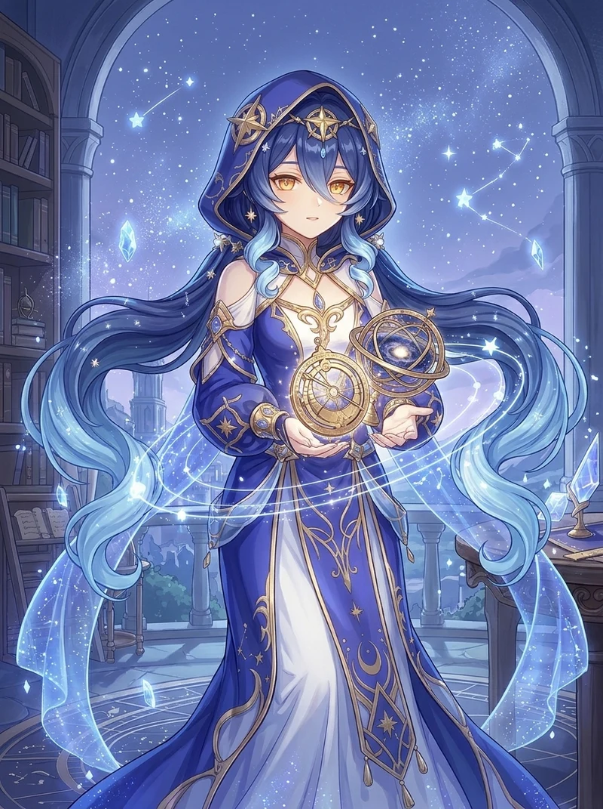
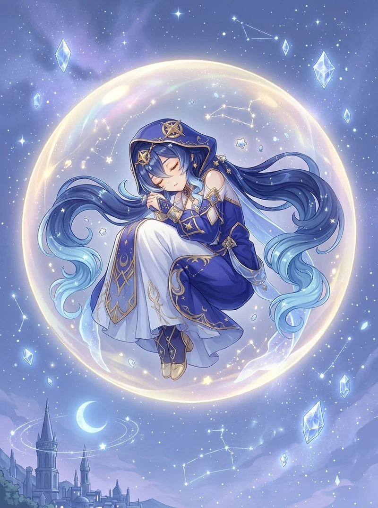

I · Nights of Formal Focus
Tracing the northern circumpolar constellations beneath the Akademiya observatory dome.
Specializing in Nocturnal Astrolabe Cartography at the Sumeru Akademiya. Surrounded by floating golden starlight rings, Layla shields companions inside the Curtain of Slumber.
Burdened by stacks of unread star charts and orbital ephemeris tables, daytime Layla constantly worries she has fallen behind her Rtawahist peers.
Once asleep inside her Curtain of Slumber, a calm, razor-sharp astral persona awakens—solving complex celestial mechanics in minutes.

Tracing the northern circumpolar constellations beneath the Akademiya observatory dome.

Drifting peacefully inside a crystalline Cryo astrolabe sphere as Night Stars coalesce.
Resting on a crescent moon pillow after another all-night celestial calculation session.
Inspect Layla's full constellation scaling, shield absorption calculator, and Rtawahist bibliography.
At Talent Lv. 10 (36,000 Max HP), Layla's Curtain of Slumber absorbs 14,820 DMG (250% Cryo efficiency) while firing 4 homing Shooting Stars per cycle.